Project Overview
Designing the end to end event experience.
An ethnography-driven product design process to unify volunteer coordination and attendee navigation into a dual dashboard system, transforming a fragmented event experience into a seamless and scalable platform.
The Client
Google Developer Group (GDG) Vancouver is an officially recognized, Google-supported community of developers and tech enthusiasts in the Vancouver area. The group hosts various events including meetups, workshops, technology learning sessions and professional networking events.
Problem Statement
How might we design a unified digital experience that makes event organization seamless by reducing challenges for volunteers and attendees while creating a more personalized, informed and memorable journey?
Research Methodology
Participation and Observation
Attended GDG Vancouver's "Intro to Gen AI" workshop as a participant observer. Field notes documented volunteer and attendee behaviours.
Semi Structured Interviews
Conducted Google Meet sessions with the Lead Organizer to gain insights into the organization's operations and challenges.
Digital User Survey
Open-ended digital questionnaire distributed across volunteers, attendees and organizers, capturing diverse pain point patterns.
Participatory Design Workshop
Organized a participatory design workshop with GDG Vancouver organizers and potential users to explore design opportunities.
Key Findings & Insights
Event Organization and Clarity
Participants shared that event schedules and navigation can be unclear during in-person events. Important information is often difficult to access, making the overall experience feel overwhelming.
Engagement and Interaction Enhancement
Participants shared limited networking tools, fewer interaction opportunities and challenges in maintaining long-term engagement within the community.
Social Media Platform Dependency Issues
Participants noted the absence of a centralized platform for communication and resource sharing, resulting in scattered and disconnected interactions.
User Personas
Two primary user personas were developed through research — a volunteer managing event operations and an attendee navigating the event experience.
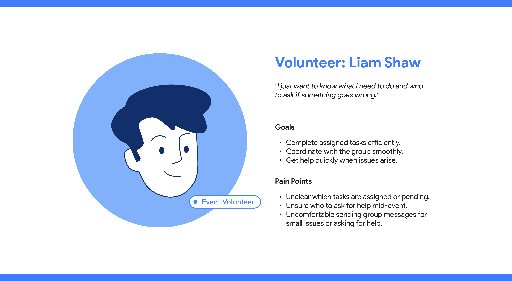
Volunteer Persona — Liam Shaw
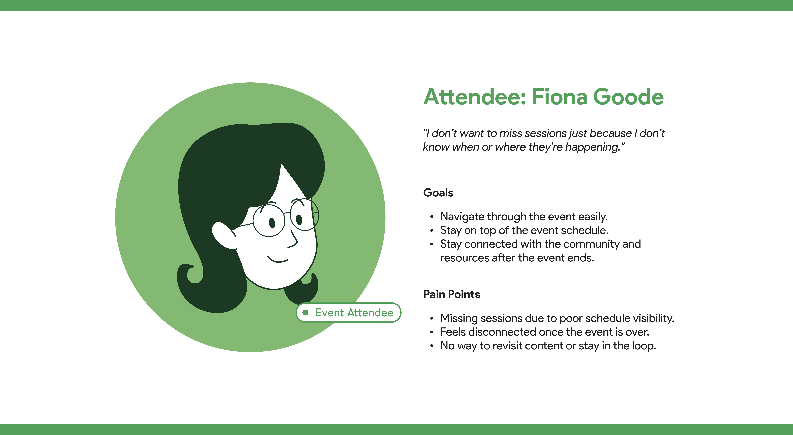
Attendee Persona — Fiona Goode
Journey Mapping
Journey maps track the actions, emotions and pain points of each persona across the full event, from pre-event setup through to post-event wrap-up.

Volunteer Journey Map — Liam Shaw

Attendee Journey Map — Fiona Goode
Design Iterations
Three design concepts emerged from the participatory workshop and ideation sessions, each addressing a core pain point identified in research.

The Magnet-Chain Board
A visual task management board allowing volunteers to connect with each other and coordinate assignments in real time.
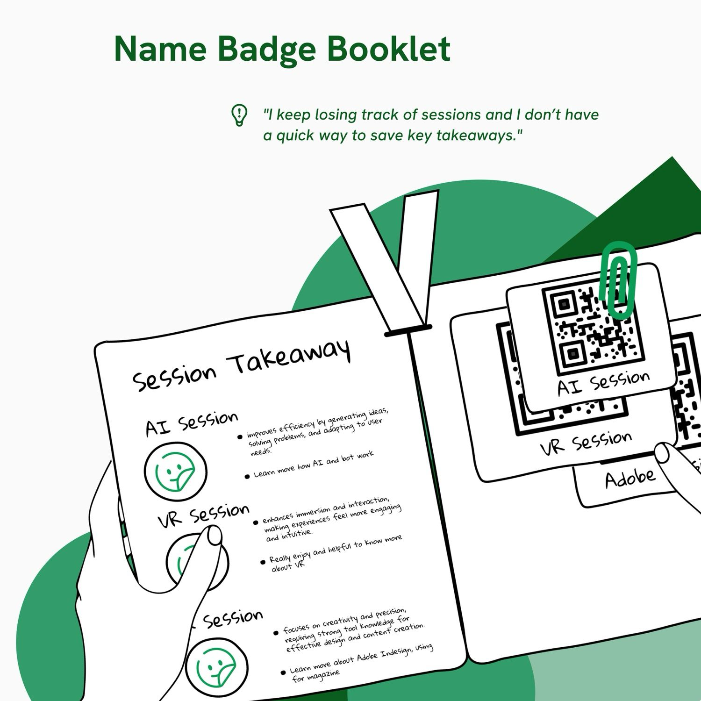
Name Badge Booklet
A session takeaway booklet combining a QR-based name badge with key session summaries to help attendees retain content.
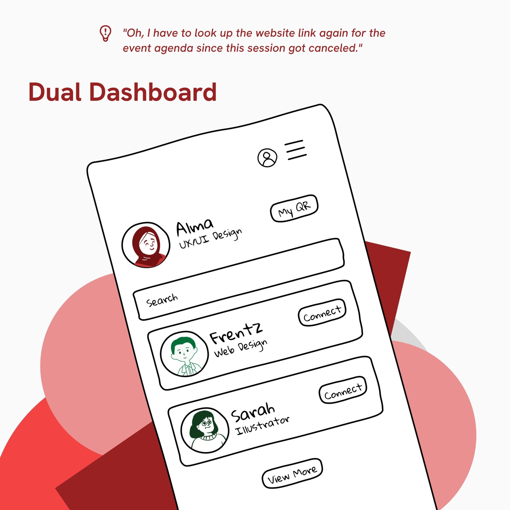
Dual Dashboard
An ethnography-driven product design to unify volunteer coordination and attendee navigation into a dual dashboard system.
Design Solution
The dual dashboard platform.
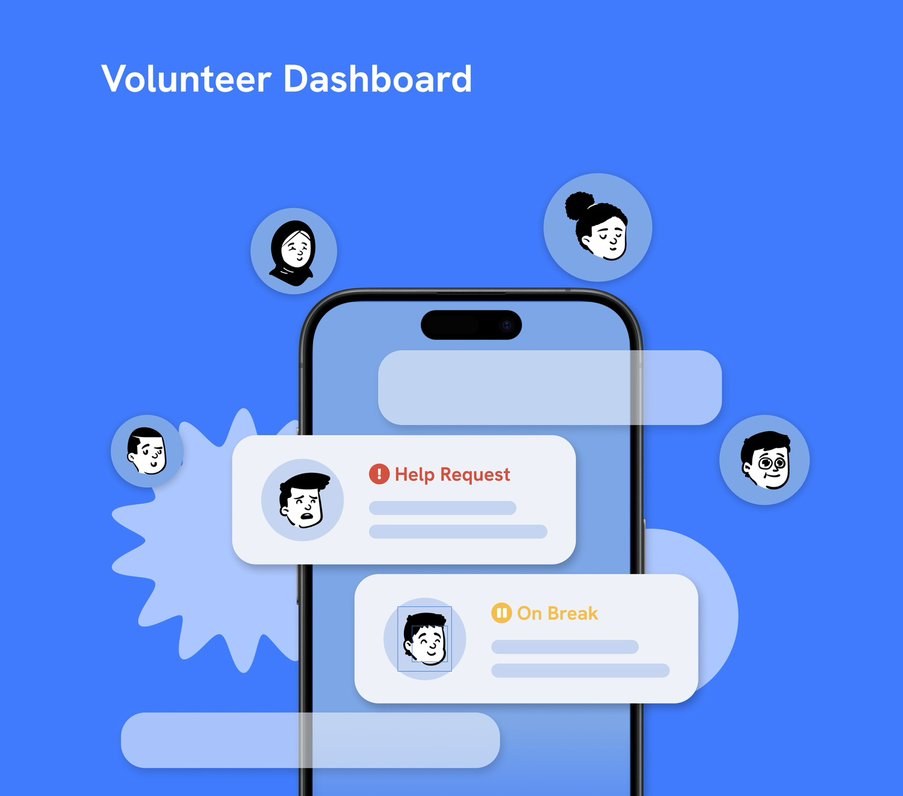
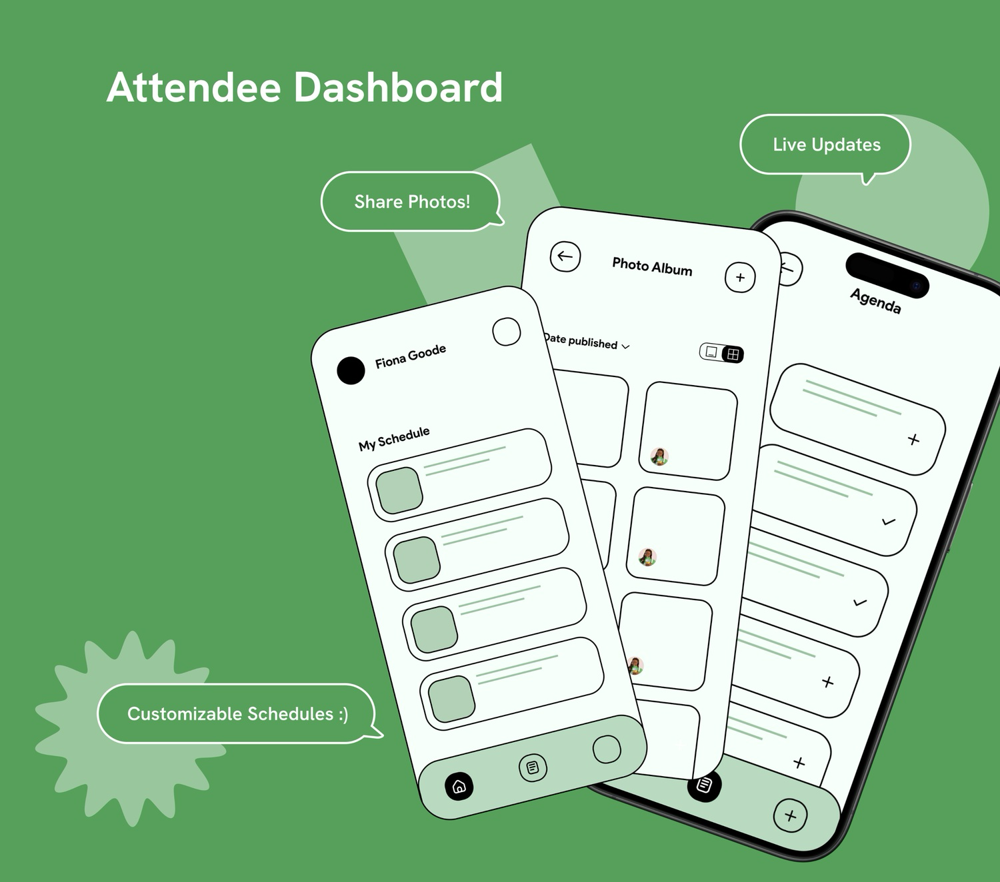
- 01Adding and checking tasks.
- 02Requesting help.
- 03Live updates and notifications.
- 04View team status and chat system.
- 01Building, adding and managing agenda.
- 02Live updates and notifications.
- 03Viewing key takeaways.
- 04Viewing photo album.
Wireframes
Low-fidelity wireframes were developed for both the Volunteer and Attendee dashboards, covering key screens including the Home Page, Task Management, Help Request flow, Schedule view and Media sharing.
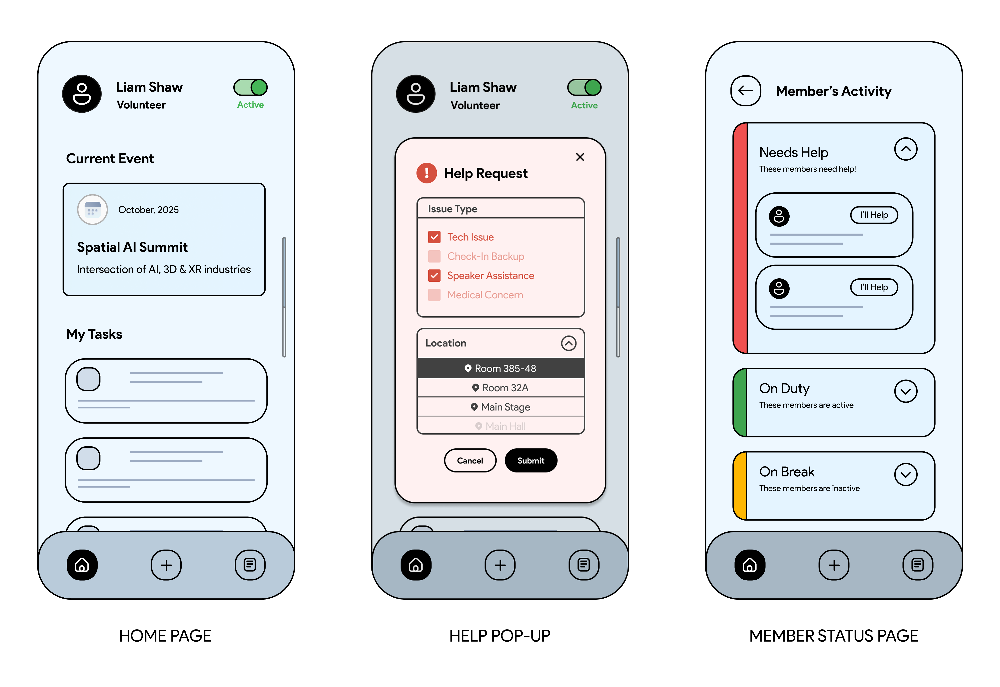
Volunteer Dashboard Wireframes
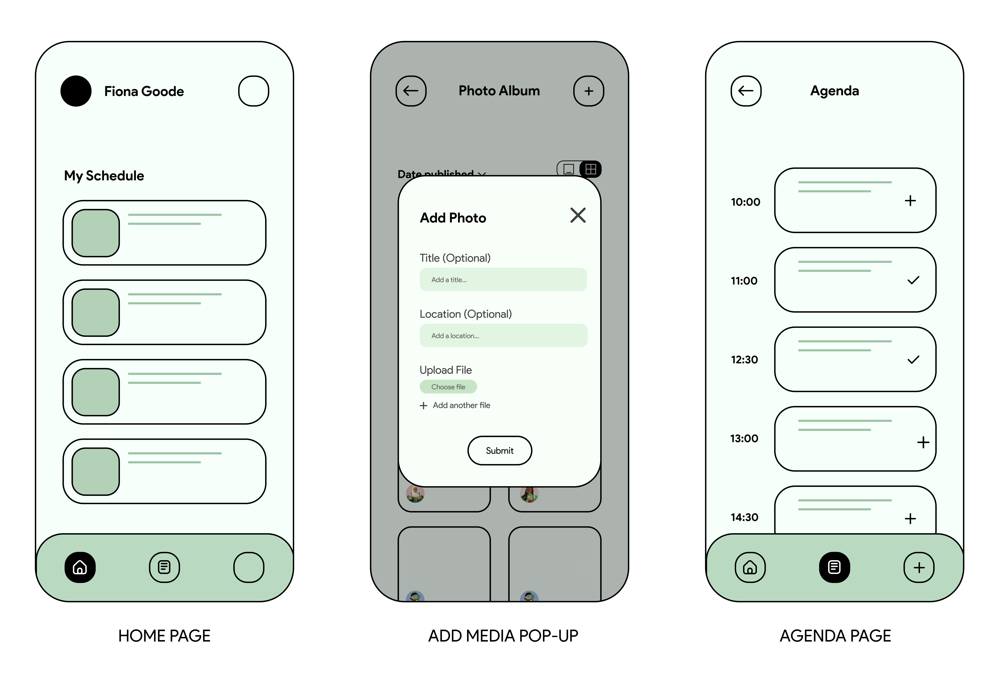
Attendee Dashboard Wireframes
Prototype
The interactive prototype was built in Figma, covering the full volunteer and attendee flows. It was tested with GDG community members to validate usability and identify further improvements.
Volunteer Dashboard Prototype
Attendee Dashboard Prototype
My Reflection
This project taught me the value of deep ethnographic research before moving into design solutions. By attending events, we uncovered insights that wouldn't have emerged through surveys alone, which directly informed our design decisions.
It was also my first experience working with a real client, which pushed me to think more practically. We had to balance our ideas with real-world constraints and make decisions through ongoing discussions and feedback.
One key takeaway was understanding that not every interesting idea is viable. Some concepts didn't provide enough value due to scalability and cost considerations. Overall, I learned to approach design in a more realistic and thoughtful way.
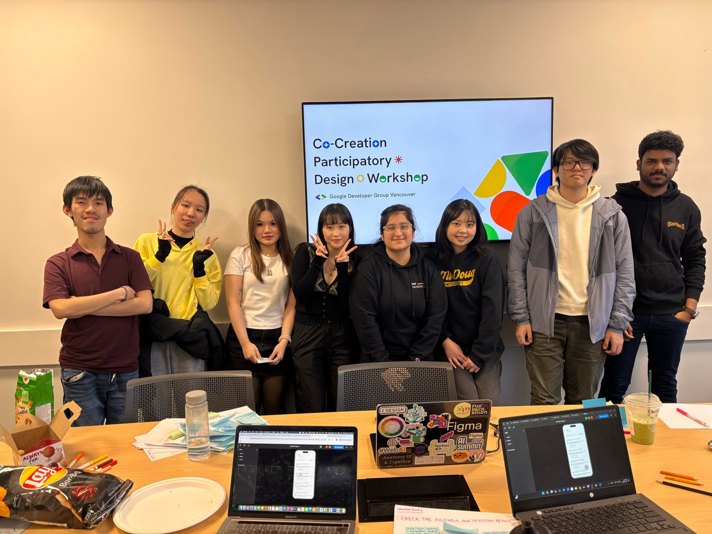
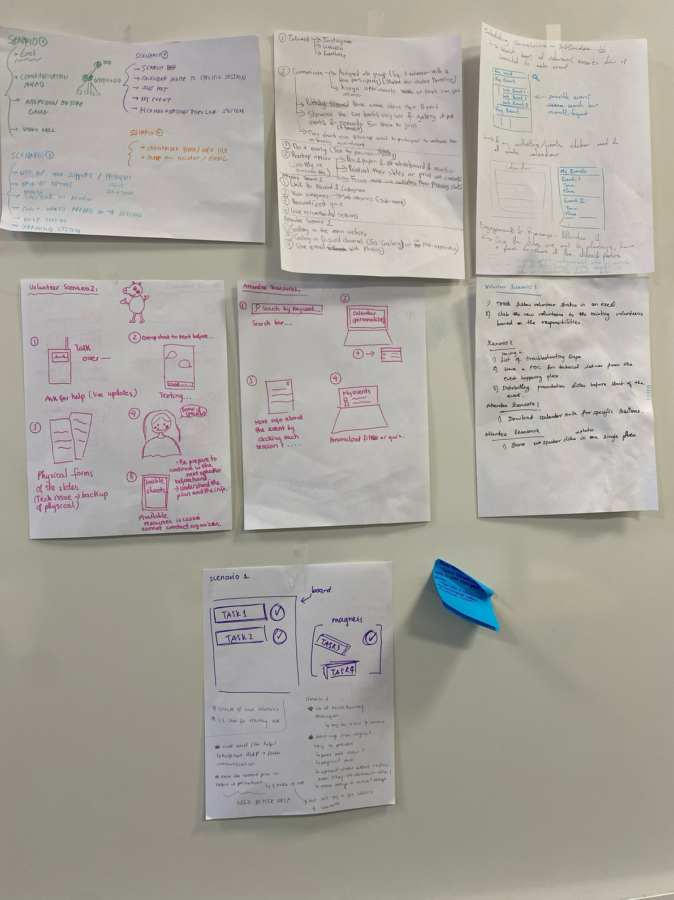
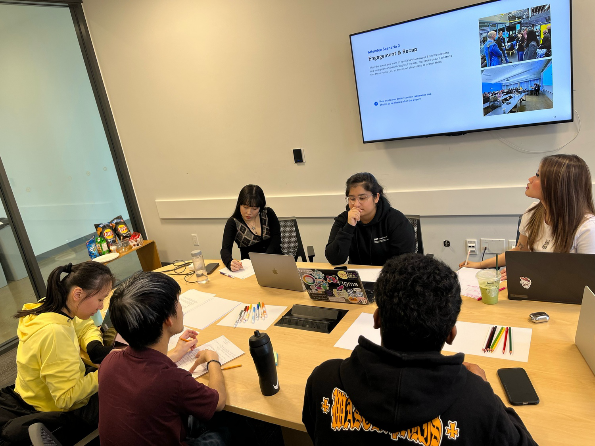
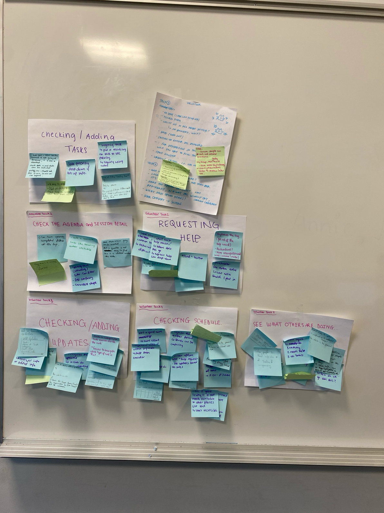
2 hours Participatory Design Workshop